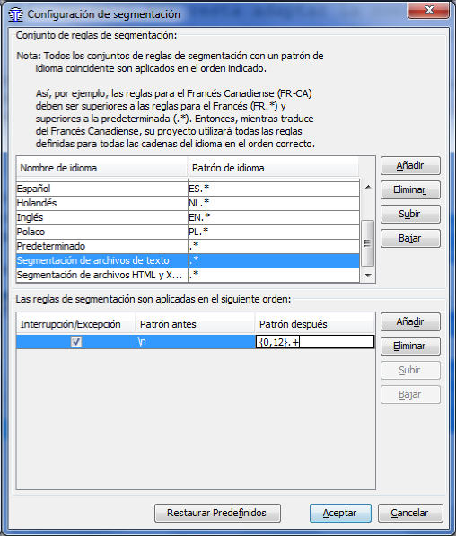
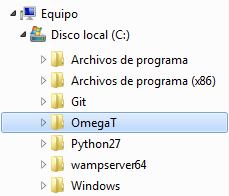
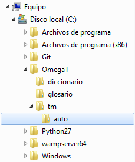
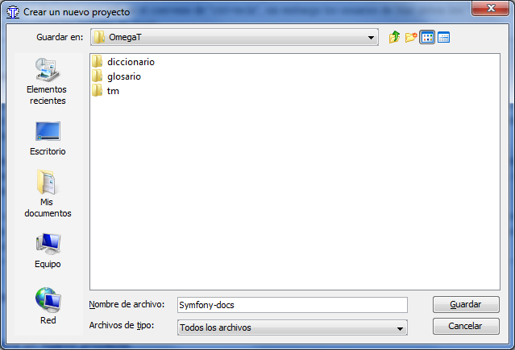
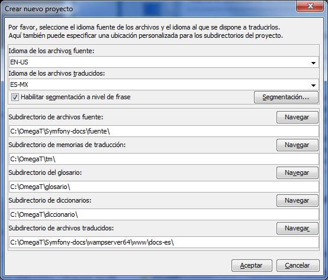

Hasta ahora, el proceso de traducción - en lo que respecta a nuestros abnegados traductores - había sido muy pesado e incluso en ocasiones doloroso, puesto que se hacía casi a mano, era demasiado agotador tanto física como mentalmente, pero afortunadamente hoy día contamos con mejores herramientas especializadas en esta área y como bono adicional son libres.
En el proceso de traducir cualquier documento es imprescindible tener a nuestra disposición las mejores herramientas, en esta sección vamos a configurar algunas de ellas específicamente para traducir la documentación de Symfony2.
Nos vamos a armar con unas cuantas - de entre las muchas existentes - herramientas libres, específicamente necesitamos aprovisionarnos con suficiente equipo para:
La herramienta libre de memoria de traducción OmegaT, utilizada para traducir la documentación, tiene las siguientes características que la convierten en la herramienta ideal para facilitar nuestro trabajo de traducción:
En primer lugar, descarga desde la página web de OmegaT la distribución para tu sistema operativo y sigue las instrucciones de instalación. Una vez instalado, al arrancar, lo primero que te muestra es una guía de inicio rápido, es muy recomendable que la leas para familiarizarte con la herramienta de traducción, además, puedes leer el manual que contiene información mucho más detallada.
Ahora, es necesario realizar algunos pasos para hacer que OmegaT reconozca los archivos *.rst e *.inc. Debido a que OmegaT utiliza filtros de archivo basándose en el tipo de archivo y aún no hemos creado un filtro para los archivos reStructuredText (no tardaremos demasiado en ello), debemos cambiar un filtro existente para adaptarlo a nuestras necesidades:
Note
Aquí explicamos la configuración en un sistema Windows, sin embargo, los usuarios de otros sistemas lo pueden adaptar fácilmente.
Ahora sólo nos resta adaptar la configuración de una regla de segmentación, en el menú elije Opciones⇒Segmentación, te mostrará un cuadro de diálogo, en la lista superior selecciona Segmentación de archivos de texto y en la lista inferior cambia el Patrón después a ‘ {0,12}.+’ como muestra la siguiente imagen.
Note
Puedes copiar y pegar el patrón, pero ten en cuenta que las comillas no forman parte de la expresión y que el primer carácter es un espacio en blanco.
¡Eso es todo! En cuanto respecta al filtro de archivos y segmentación, en el siguiente paso debemos conseguir los documentos originales (por supuesto en Inglés) como base para nuestra traducción.
Ahora vamos a crear un proyecto de traducción, a efecto de compartir las memorias de traducción con toda la documentación de Symfony2 y paquetes adjuntos como Twig y Doctrine, vamos a crear un directorio que será la raíz de todos los proyectos de traducción, en este caso lo llamamos OmegaT:
Note
Es muy importante que mantengas esta estructura de directorios, más adelante verás porqué.
Ahora, en el directorio raíz del proyecto de traducción, vamos a crear tres nuevos subdirectorios llamados diccionario, glosario y tm, además, dentro del subdirectorio tm vamos a crear un subdirectorio adicional, llamado auto, tal que así:
Cómo es de esperar de acuerdo a los nombres de los directorios, en cada uno de ellos colocaremos los archivos pertinentes, por ejemplo: en glosario colocaremos nuestros archivos de glosarios de términos, en tm las memorias de traducción y así sucesivamente.
Sin embargo, cuando OmegaT encuentra una coincidencia en las memorias de traducción, automáticamente inserta un prefijo [parcial], esta - en ocasiones - es una útil característica aunque a veces un tanto molesta porque tenemos que eliminar el prefijo manualmente, podemos eludir este comportamiento predeterminado, vamos a guardar nuestras memorias de traducción en el subdirectorio tm/auto/ con lo cual OmegaT no volverá a insertar el prefijo.
Tip
Otro modo de eliminar el prefijo sin colocar el cursor en esa posición para borrarlo manualmente, es con el acceso directo CTRL+R (Reemplazar con la coincidencia).
Vamos a crear un nuevo proyecto de traducción en OmegaT, para ello ve al menú Archivo⇒Nuevo, en el cuadro de diálogo navega hasta el directorio raíz de los proyectos de traducción y bautízalo como symfony-docs como muestra la figura:
Al pulsar en Guardar te mostrará un nuevo cuadro de diálogo para configurar los directorios del proyecto, ponlos de la siguiente manera:
Note
Ten en cuenta que el subdirectorio de archivos traducidos lo especificamos fuera del directorio de traducción, específicamente dentro del servidor web (en este caso WampServer), en un subdirectorio en el cual también colocaremos los demás proyectos de traducción dónde generaremos la documentación en formato HTML para ir revisando nuestro avance.
A continuación, abrirá el nuevo proyecto y te mostrará un mensaje diciendo que aún no tienes archivos fuente para traducir, esto lo vamos a solucionar en la siguiente sección.
Llegó el momento de clonar los documentos originales, para ello necesitamos el sistema Git para el control de versiones, para familiarizarte con él te recomiendo el magnífico libro ProGit, es libre y está disponible en varios idiomas, para aprender cómo instalarlo puedes leer la sección Instalando Git del primer capítulo.
Puesto que no pretendemos modificar la documentación oficial (si quieres aportar algún artículo o guía necesitas seguir otro procedimiento), sino únicamente traducirla, necesitamos clonar el repositorio de la documentación de Symfony (en Inglés), en Windows necesitas lanzar GitBash (en otros sistemas abre una consola) y ejecuta las siguientes ordenes:
$ cd c:/OmegaT/symfony-docs/fuente/
$ git clone git://github.com/symfony/symfony-docs.git
Ahora, felizmente podrías comenzar a traducir en OmegaT. Pero... ¡Espera!, mucho del trabajo de la traducción ya se ha llevado a cabo, únicamente tenemos que descargar la memoria del proyecto de traducción y colocarla en el subdirectorio y archivo adecuado, el cual en este caso es symfony-docs/omegat/project_save.tmx, este archivo sí queremos compartirlo con los demás traductores, para ello vamos a crear nuestro repositorio, en este caso es el repositorio de la memoria de traducción del Proyecto de traducción al Español (necesitas buscar el de tu idioma).
Para bifurcar el repositorio de traducción debes crear una cuenta (si todavía no tienes una) en github, a continuación ve al repositorio de la memoria de traducción y haz clic en el botón Fork, ahora ya tienes una bifurcación con la cual puedes trabajar, sólo la tenemos que configurar para poder trabajar con ella en OmegaT. En GitBash (o en la misma consola, si utilizas otro sistema) ejecuta las siguientes ordenes, sustituyendo TuNombre y TuCorreoE@ejemplo.com con los valores reales:
$ cd c:/OmegaT/symfony-docs/omegat/
$ git config --global user.name "TuNombre"
$ git config --global user.correo TuCorreoE@ejemplo.com
$ git init
$ git clone git://github.com/gitnacho/omegat.git
A continuación, dentro de OmegaT, recarga el proyecto para que detecte tanto los archivos fuente recién descargados del repositorio oficial cómo la memoria, lo puedes conseguir por medio del menú Archivo⇒Volver a cargar o simplemente pulsando la tecla F5.
A partir de ahora puedes comenzar a traducir, corregir errores y solicitar la atracción de tus cambios al repositorio maestro; no obstante, debido a que estas herramientas son una enorme ayuda en el proceso de traducción, es buena idea llegar a un acuerdo para que cada colaborador sea el administrador de la memoria de traducción un determinado turno, digamos 2, 4 u 8 horas, incluso un día, algo que se pueda controlar por medio de algún sistema, por ejemplo la lista de correo de traductores o en su defecto administrar un proyecto completo, por ejemplo, Doctrine está subdividido, tenemos DBAL, ORM, etc.
Cuando escribes manualmente, en este caso durante la traducción, fácilmente puedes cometer errores como palabras dobles, intercambio en la posición de las letras, etc. Por ejemplo:
Sgeun un etsduio de una uivenrsdiad ignlsea, no ipmotra el odren en el que etsan ersciats las lteras, la úicna csoa ipormtnate es que la pmrirea y la útima ltera etsén ecsritas en la psicioón cocrrtea. El rsteo peuden estar ttaolmntee mal y aun pordas lerelo sin pobrleams. Etso es pquore no lemeos cada ltera por sí msima snio la paalbra cmoo un tdoo.
¿No te parece increíble?
Este tipo de errores fácilmente los detecta el corrector ortográfico, pero, a pesar de que OmegaT cuenta con uno integrado, algunas veces olvidas comprobarlo y este tipo de error pasa desapercibido; también puedes leer físicamente el resultado pero, como acabas de ver, fácilmente puedes omitir ciertos errores tipográficos.
Una excelente ayuda en la revisión y corrección de estos errores son los sistemas de texto a voz y Balabolka es uno de ellos, es libre y está disponible en varios idiomas. Para utilizarlo sólo tienes que activar las teclas globales en la configuración del sistema para que al estar traduciendo te “repita” lo que haz escrito.
Lamentablemente, esta pieza de software sólo es para Windows, puedes descargar esta útil herramienta desde su página web y seguir las instrucciones de instalación, además, en la misma página están los enlaces para los archivos de voces en varios idiomas, los cuales se tienen que descargar e instalar por separado.
No dudo exista por ahí alguna utilidad de este tipo para Linux y OS X, si sabes de alguna te agradeceré me lo hagas saber para poner el enlace correspondiente.
Ahora sólo resta ponernos de acuerdo en algunos detalles, estaremos en contacto en la lista de correo de Symfony2 docs.